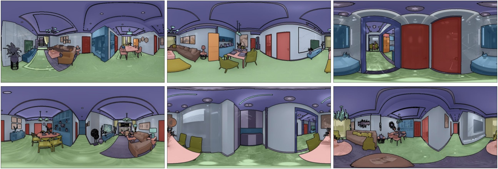

Semantic Segmentation
Introduction
Depth estimiation is an essential task in indoor scene understanding. We show the performance gain by generating dataset using our system.
Here we show the DSL for generating semantic mask in NYUd-v2-40 format which helps boosting the current semantic segmentation task.
More details can be found in the paper and supplementary document.
DSL code
In this example, we generate semantic labels and show the domain randomization ability of the MINERVAS system.
First, in the Entity Process Stage we filter out cameras in the rooms which do not has more than 4 furniture using CameraFilter.
For each camera, we set the camera model as panoramar and the resolution of the image to 640 * 480 in class CameraSetting.
We then utilize the system's ability for domain randomization to generate data. Specifically, we randomize room layout in the Scene Process Stage using FurnitureLayoutSampler. Then, we randomize material, model and camera in the Entity Process Stage using EntityRandomizer.
In the Pixel Process Stage, we generate semantic label with NYUv2 40 label set as shown in SemanticOutput class.
from ksecs.ECS.processors.entity_processor import EntityProcessor
from shapely.geometry import Point
class CameraFilter(EntityProcessor):
def is_valid_room(self, room, num_furniture=3):
# Check if the number of furniture in the room is above threshold.
polygon = room.gen_polygon()
count = 0
for ins in self.shader.world.instances:
if not ins.type == 'ASSET':
continue
if polygon.contains(Point([ins.transform[i] for i in [3, 7, 11]])):
count += 1
return count > num_furniture
def delete_cameras_in_room(self, room):
polygon = room.gen_polygon()
for camera in self.shader.world.cameras:
if polygon.contains(Point([camera.position[axis] for axis in "xyz"])):
self.shader.world.delete_entity(camera)
def process(self):
# We only use rooms with more than 4 assets
for room in self.shader.world.rooms:
if not self.is_valid_room(room, 4):
self.delete_cameras_in_room(room)
class CameraSetting(EntityProcessor):
def process(self):
for camera in self.shader.world.cameras:
camera.set_attr("imageWidth", 1024)
camera.set_attr("imageHeight", 512)
camera.set_attr("cameraType", "PANORAMA")
# Randomize layout
from ksecs.ECS.processors.scene_processor import SceneProcessor
class FurnitureLayoutSampler(SceneProcessor):
def process(self):
for room in self.shader.world.rooms:
room.randomize_layout(self.shader.world)
import numpy as np
class EntityRandomizer(EntityProcessor):
def randomize_model_material(self):
for instance in self.shader.world.instances:
# Randomize material
self.shader.world.replace_material(
id=instance.id,
type='REPLACE_ALL'
)
if instance.type == 'ASSET':
# Randomize model
self.shader.world.replace_model(
id=instance.id
)
def randomize_light(self):
for light in self.shader.world.lights:
# Randonly adjust the color temperature
light._tune_temp(1)
# Randomly adjust the light intensity
light.tune_random(1.2)
def randomize_camera(self):
for camera in self.shader.world.cameras:
random_vec = np.random.normal(0, 1, size=3)
camera_pos = np.array(list(camera.position.values()))
randomized_pos = camera_pos + random_vec * np.array([500.0, 500.0, 100.0])
camera.set_attr('position', x=randomized_pos[0], y=randomized_pos[1], z=randomized_pos[2])
camera.set_attr('lookAt', z=randomized_pos[2])
def process(self):
self.randomize_model_material()
self.randomize_light()
self.randomize_camera()
from ksecs.ECS.processors.render_processor import RenderProcessor
class Render(RenderProcessor):
def process(self, *args, **kwargs):
self.gen_rgb(distort=0, noise=0)
from ksecs.ECS.processors.pixel_processor import PixelProcessor
from ksecs.resources import NYU40_MAPPING
class SemanticOutput(PixelProcessor):
def process(self, **kwargs):
self.gen_semantic(label_arch=NYU40_MAPPING)
MINERVAS output samples
